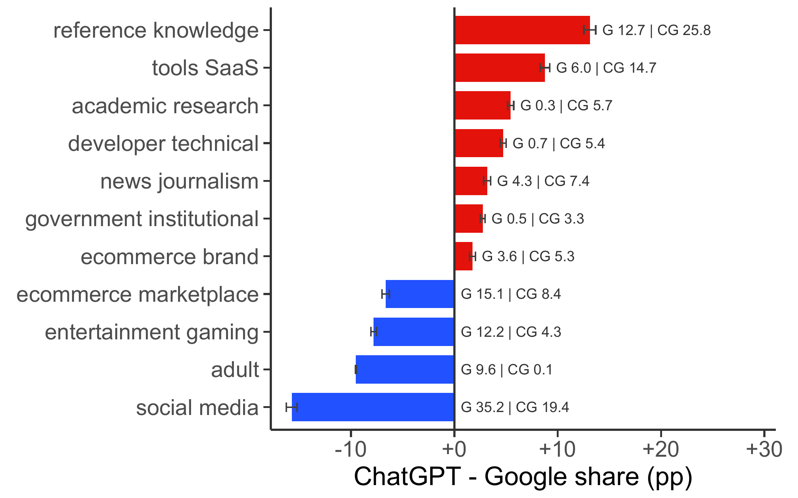

Research
Working Papers

Search engines have long allocated attention on the web by routing users from queries to websites. AI search changes this arrangement because information needs can be resolved inside the intermediary. Using URL-level Comscore U.S. desktop clickstream, we compare ChatGPT and Google information-seeking occasions and exploit ChatGPT Search access expansions to estimate traditional search displacement. ChatGPT produces outbound clicks in only 5.2% of conversation sessions, far below Google’s referral ratio. The remaining clicks are not a scaled-down Google stream: they skew toward specialized destinations and away from ad-supported sites. Wider access cuts search use by 9.4%, with search-referral losses largest for informational categories. Our findings identify a central economic shift in digital intermediation: AI search might satisfy information needs inside the intermediary while weakening the referral bargain that has linked search, traffic, and content production on the open web.
Governing AI Content Tools: The Efficiency–Diversity Trade-off in Platform Knowledge Ecosystems